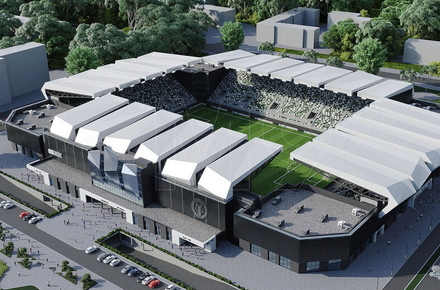

ПОЛІССЯ

Основна інформація
ФК Полісся
«Полісся» — український футбольний клуб із Житомира. Заснований 1959 року. Припинив виступи в чемпіонатах
України
в 2005 році. Відновлений 2016 року як МФК «Житомир». На початку 2017 року повернув назву «Полісся».
Починаючи з
сезону 2023/24 виступає в українській Прем'єр-лізі.
Наступна гра
Інгулець VS Полісся22.02.2025 | Кривий Ріг | "Гірник"
Побудова нового стадіона
Президент футбольного клубу «Полісся» Геннадій Буткевич та представники топменеджменту клубу зустрілись з
представниками засобів масової інформації та блогерами, щоб презентувати вектори розвитку «Полісся» на
найближчий період.

«Полісся» — український футбольний клуб із Житомира. Заснований 1959 року. Припинив виступи в чемпіонатах України
в 2005 році. Відновлений 2016 року як МФК «Житомир». На початку 2017 року повернув назву «Полісся». Починаючи з
сезону 2023/24 виступає в українській Прем'єр-лізі.
Імад Ашур про матч з "Яблонцем" та підготовку команди на зборах:
- Наскільки інформативним цей матч був для вас? На що конкретно ви хотіли б закцентуватися?
- Як і будь-яка гра, яка є на зборах, це перш за все саме цей збір інформації, бо у нас надалі ще 5 матчів і все
ближче і ближче до вже офіційних матчів нам доведеться робити певні висновки стосовно і побудови складу, і
стосовно цих деталей, моментів індивідуальних в першу чергу, і рішень індивідуальних, які ми приймаємо в певні
моменти. Сьогодні конкретно, якщо говорити, наприклад, про перший тайм, то, знову ж таки, одне рішення не
підтиснути суперника, дало йому нагоду знайти момент для загострення, яким вони користувалися. Після цього у нас
була достатня кількість загострень, які не завершились взяттям воріт, на жаль. І так само було достатньо нагод, де
можна було загострювати чи розпорядитись м’ячем краще, але це питання індивідуальних рішень. Відчутно, що нам
фізично важко витримати й тайм, що не є чимось дивним. Питання суперника не турбувало зовсім. Ми не розбирали, не
слідкували, до суперника не готувалися. У нас був весь фокус, весь акцент на тому, що ми хочемо робити. Поки що
будуть заважати ці фізичні кондиції, вони будуть заважати, ми маємо це прийняти. Але я думаю, що ми наближаємось
до того, щоб 45-60 хвилин ми вже все ж нав’язували свою гру. Коли ми дістанемось цього моменту, я всеодно буду
очікувати кращого прийняття рішень від певних гравців. І це, в першу чергу, в інтересах самих гравців, тому що
грати вже потім в офіційних матчах хоче кожен.
- Якщо абстрагуватися від рахунку, який тайм вам більше сподобався?
- Ну, відверто, була різниця. Група, яка вийшла в першому таймі, відчувалася свіжішою, на мою думку, і змогла цей
тайм провести більш рівно. З точки зору гри, так само думаю, що у нас перший тайм був більш цілісний, тому що нам
вдавалося створювати. Ну, знову ж таки, не завершувати, на жаль, але створювати епізоди, створювати нагоди для
загострень тощо, і загострень біля наших воріт було не так багато. В другому таймі наче увійшли в гру краще, бо в
перші хвилині адаптувалися до структури суперника і до пресингу. В другому таймі увійшли в гру краще, але, знову ж
таки, занадто багато було рішень вже на третині суперника, коли бажано і треба бути сміливішим, треба
загострювати, треба подавати, треба бити, треба брати на себе відповідальність. І замість того, щоб повертатися до
середини поля, до нашої третини. Ось цим ми інколи зловживаємо і можемо на контрасті взяти навіть другий відбилися
від їх атаки. Миттєво, без сумніву, знову м'яч повертається в майданчик. А там вже буде, що буде. І ось ці
моменти, які більше пов'язані вже з індивідуальними внутрішніми сумнівами, нам треба надалі наполегливо вимагати,
щоб наш цільний напрямок були ворота суперника. В усіх моментах гри. Можемо чи ні, далі вже обираємо безпосередньо
в моменті. Але дуже багато епізодів, де ми могли просувати цей м'яч, ми все одно приймаємо рішення повертатися
назад. Ці рішення, так чи інакше, будуть впливати на вибір складу, на той чи інший матч. Це нормально. І навіть
зараз в товариських матчах так само будемо наближатися до офіційних. Так само будемо думати, як розподіляти
ігровий час між гравцями.